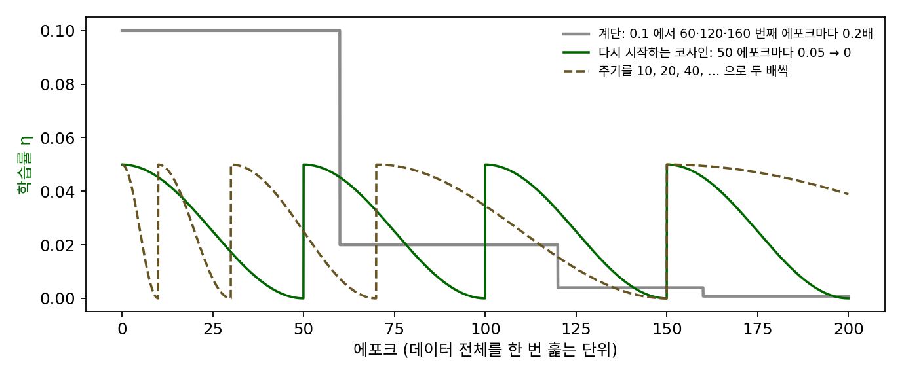
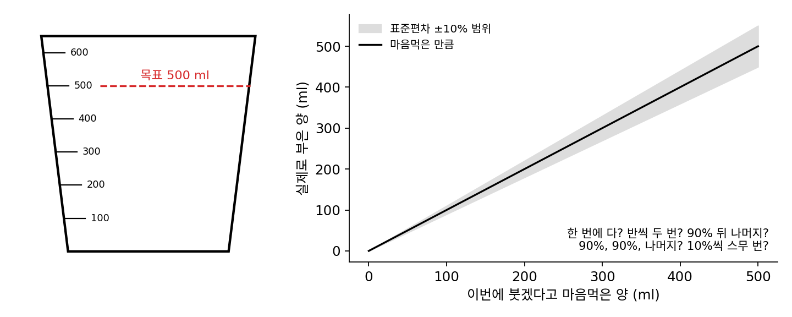
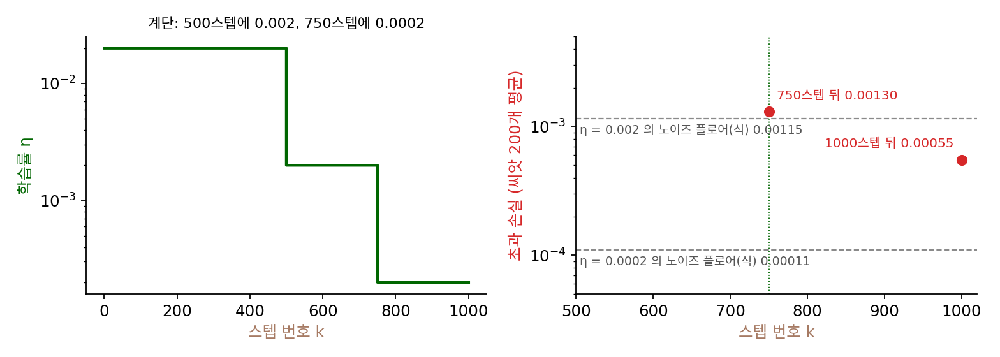
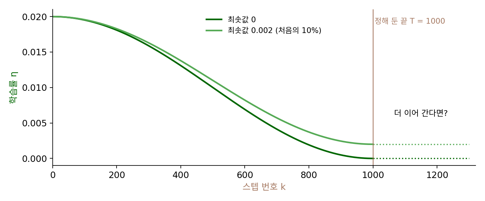
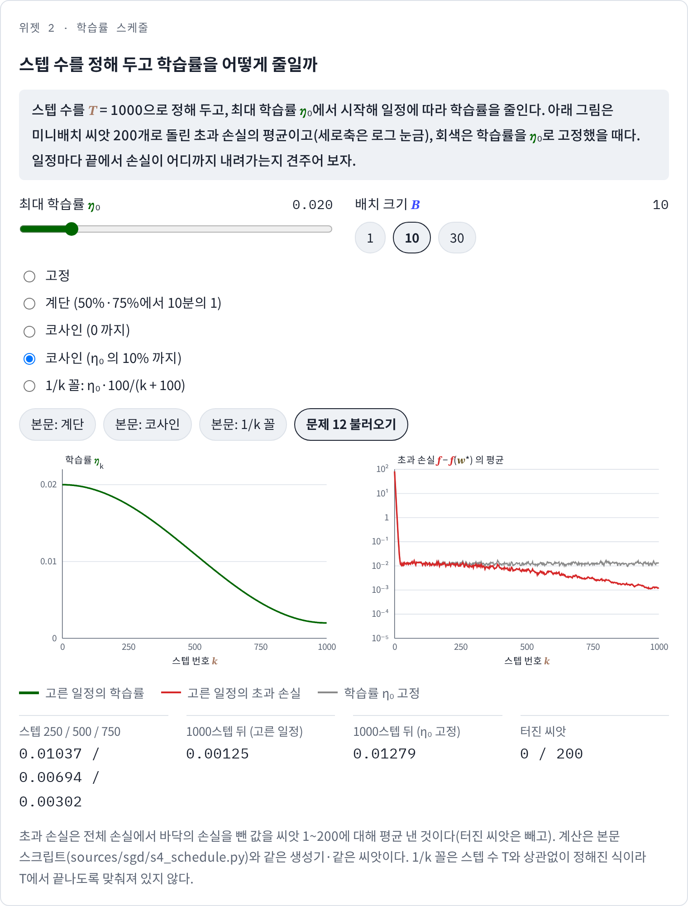

학습률 스케줄: 정해 둔 스텝 수 안에서 줄인다
로빈스–먼로 조건은 학습률을 끝없이 줄여 가면 결국 바닥에 닿는다고 말하지만, 실제 학습에는 끝이 있다. GPU를 쓸 수 있는 시간이 정해져 있으니, 학습을 시작하기 전에 몇 스텝을 걸을지부터 정한다. 정해진 스텝 수 안에서 할 일은 둘이다. 처음에는 바닥까지 멀리 가야 하니 학습률이 커야 하고, 끝에는 노이즈 플로어를 낮춰야 하니 학습률이 작아야 한다. 그 사이를 어떤 모양으로 이어야 할까?
역사: 계단에서 코사인으로

2010년대 이미지 분류의 학습률은 대개 계단처럼 줄였다. 카이밍 허(Kaiming He)와 동료들의 ResNet 논문(2015년 공개, 층을 건너뛰는 잔차 연결을 쓴 합성곱 신경망)은 이미지넷(이미지 약 128만 장을 1000가지로 분류하는 데이터)에서 학습률을 0.1로 시작해 오차가 더 줄지 않을 때마다 10분의 1로 줄였고, 배치 크기 256으로 60만 스텝까지 학습했다. CIFAR-10(가로세로 32픽셀 이미지 6만 장)에서는 미리 정해 둔 3만 2천 스텝과 4만 8천 스텝에서 10분의 1씩 줄이고 6만 4천 스텝에서 멈췄다. 이렇게 하면 잘 되지만 언제 몇 배로 줄일지를 데이터와 모델마다 정해야 한다.
일리야 로시칠로프(Ilya Loshchilov)와 프랑크 후터(Frank Hutter)는 2016년 논문 「다시 시작하는 확률적 경사하강(SGDR: Stochastic Gradient Descent with Warm Restarts)」(이듬해 표현 학습 국제 학회 ICLR에 실림)에서 다른 모양을 냈다. 한 주기 안에서 학습률을 코사인 곡선의 반 바퀴를 따라 최댓값에서 최솟값으로 매끄럽게 줄이고, 주기가 끝나면 학습률을 다시 최댓값으로 올려 처음부터 줄이는 것이다. 파라미터는 그대로 두고 학습률만 다시 올리므로 「따뜻한 다시 시작(warm restart)」이라 불렀다. 그들은 이 스케줄이 당시 쓰이던 스케줄보다 2~4배 적은 에포크로 비슷하거나 더 좋은 결과를 낸다고 보고했고, 다시 시작하기 직전의 모델들을 모아 CIFAR-10에서 오류율 3.14%, CIFAR-100(같은 크기의 이미지를 100가지로 분류)에서 16.21%를 얻었다. 그 뒤로 다시 시작하는 부분은 빼고 학습 전체를 코사인 한 주기로 줄이는 쓰임이 널리 퍼졌다.

코사인 곡선은 고등학교에서 배운 건데, 그걸 학습률에 쓰기까지 2016년이 걸렸다는 게 신기해요. 계단보다 매끄러운 곡선이 나을 거라는 건 누구나 짐작할 만하잖아요.

짐작은 할 수 있죠. 그걸 확인하려면 무엇이 필요할까요? ResNet은 이미지넷에서 배치 크기 256으로 60만 스텝을 학습했어요.

스케줄 하나를 시험하려면 그 60만 스텝을 처음부터 다시 돌려야 하네요. 256 × 60만이면… 이미지를 1억 5천만 번 넘게 모델에 넣는 거고요.

계단도 그러면 「언제 몇 배로 줄이나」를 정하려고 여러 번 돌려 봤을까요? CIFAR-10의 3만 2천 스텝, 4만 8천 스텝 같은 숫자요.

논문은 줄이는 시점을 어떻게 골랐는지 적지 않았어요. 다만 데이터와 모델이 바뀌면 다시 정해야 하는 값이었죠. 로시칠로프와 후터가 내세운 것도 곡선이 매끄럽다는 점보다, 2~4배 적은 에포크로 비슷하거나 더 좋은 결과를 냈다는 점이었어요.

그럼 스텝 수가 정해져 있을 때 모양 자체가 중요한 걸까요, 아니면 처음에 크고 끝에 작다는 것만 지키면 될까요?
1000스텝 예산으로 학습률 스케줄 다섯
배달 1000건 회귀에서 스텝 수를 T = 1000으로 정하고, 배치 크기 10으로 학습률 스케줄 다섯을 비교했다. 큰 학습률은 0.02(ηa = 0.21), 작은 학습률은 그 10분의 1인 0.002다. 계단은 0.02로 시작해 500스텝에서 0.002로, 750스텝에서 0.0002로 줄인다. 코사인은 0.02에서 0까지 매끄럽게 줄이고, 1/k 꼴은 0.02 × 100/(k + 100)이다. 씨앗 200개로 돌린 초과 손실의 평균은 다음과 같다.
| 학습률 스케줄 | k = 10 | k = 50 | k = 500 | k = 750 | k = 1000 |
|---|---|---|---|---|---|
| 고정 0.02 | 0.782 | 0.0122 | 0.0138 | 0.0113 | 0.0128 |
| 고정 0.002 | 54.0 | 10.07 | 0.00108 | 0.00129 | 0.00122 |
| 계단 | 0.782 | 0.0122 | 0.0138 | 0.00130 | 0.00055 |
| 코사인 | 0.782 | 0.0122 | 0.00625 | 0.00213 | 0.00057 |
| 1/k 꼴 | 0.972 | 0.00822 | 0.00192 | 0.00156 | 0.00114 |
고정 0.02는 50스텝 만에 노이즈 플로어 0.012에 닿고 거기서 멈춘다. 고정 0.002는 노이즈 플로어가 열 분의 일이지만 50스텝 뒤에도 초과 손실이 10이다. 계단과 코사인은 처음에는 고정 0.02와 똑같이 빨리 내려가고, 끝에서는 고정 0.002보다 낮은 0.00055~0.00057에 닿는다. 두 스케줄은 모양이 달라도 학습률의 합이 10.55와 10.01로 비슷하고, 끝의 학습률이 작다는 점이 같다. 배달 1000건 회귀에서는 1/k 꼴도 0.00114로 나쁘지 않다.
이처럼 스텝마다 쓸 학습률을 미리 정해 둔 규칙을 학습률 스케줄 (스텝 번호에 따라 학습률을 바꾸는 규칙 / learning rate schedule)이라 한다. 코사인 스케줄은 다음 식이다.
k = 0에서 1 + cos 0 = 2라 학습률이 최댓값이고, k = T에서 1 + cos π = 0이라 최솟값이다. 처음과 끝에서는 천천히 바뀌고 가운데에서 가장 빨리 준다. 계단과 비교하면 언제 몇 배로 줄일지를 정할 필요 없이 스텝 수 T만 알면 되는데, 1/k 꼴은 T를 모르는 스케줄이라, 정해 둔 끝에서 학습률이 얼마일지를 고를 수 없다.
ML에서: GPT-3의 코사인 스케줄
큰 언어 모델은 대부분 코사인 스케줄을 쓴다. GPT-3 논문(브라운 외, 2020)은 모든 크기의 모델을 학습할 때 학습률을 2600억 토큰(토큰은 글을 잘게 자른 조각으로, 언어 모델이 한 번에 하나씩 읽는 단위다)에 걸쳐 코사인으로 처음 값의 10%까지 줄이고, 그 뒤로는 10%에서 학습을 이어 갔다고 적었다. 전체 학습은 3000억 토큰이었다. 같은 문단에는 처음 3억 7500만 토큰 동안 학습률을 직선으로 올렸다는 설정과, 배치 크기를 학습 초반 40억~120억 토큰에 걸쳐 작은 값에서 점점 키웠다는 설정도 있다. 학습률을 왜 처음에 올리는지는 이 장의 마지막 개념인 워밍업에서 본다.
문제 10. 계량컵에 물 500ml 붓기
계량컵에 물을 정확히 500ml 채우려 한다. 붓는 양은 마음먹은 양의 10%쯤 손이 떨려서(표준편차) 실제로는 조금 더 붓기도, 덜 붓기도 한다. 남은 양을 보고 다시 부을 수 있다. (가) 한 번에 500ml를 부으면 마지막 오차의 표준편차는 얼마인가? (나) 남은 양의 반씩 두 번 부으면? 처음에 90%를 붓고 나머지를 부으면? (다) 「90%, 다시 남은 양의 90%, 나머지」로 세 번 부으면? 처음부터 남은 양의 10%씩 조금씩 스무 번 부으면?

1만 번 흉내 내면 한 번에 다 부을 때 50.3ml, 반씩 두 번이면 25.3ml예요. 많이 나눌수록 정확하니까 10%씩 스무 번이 제일 좋겠죠.
10%씩 스무 번 부으면 마지막에 붓는 양은 얼마죠?
열아홉 번 동안 남은 양의 10%씩 부으면 500 × 0.9¹⁹ = 67.5ml가 남아요. 마지막에 그걸 한 번에 부어요.
그 마지막 한 번의 손떨림은요?

6.75ml라서 오차가 6.77ml예요. 스무 번이나 부었는데 90%를 먼저 붓고 나머지를 부은 6.74ml와 같아요.
마지막 오차는 마지막에 부은 양이 정해. 그러니까 처음엔 크게 부어서 빨리 다가가고, 끝에 붓는 양을 작게 하는 게 중요해. 「90%, 90%, 나머지」는 마지막에 5ml만 부으니까 0.92ml야.
1000스텝 예산의 학습률 스케줄 표와 비교하면 어떤가요?
고정 0.002가 10%씩 조금씩 붓기 같아요. 끝은 정확해도 다가가는 데 오래 걸려요.
계단이랑 코사인은 「90%, 90%, 나머지」 쪽이네. 처음엔 크게, 끝에선 작게.

그럼 끝의 노이즈 플로어는 마지막 구간의 학습률이 정하겠네요.

보고서 분량 맞출 때도 처음엔 문단째로 지우고, 마감 직전엔 단어 하나씩 고치는 게 계단·코사인 스케줄이네요. 처음부터 단어 하나씩 고치면 마감까지 못 끝내요.
문제 11. 계단의 마지막 구간은 왜 덜 내려가나
1000스텝 예산의 계단 스케줄은 750스텝에서 학습률을 0.002에서 0.0002로 줄인다. 노이즈 플로어 식으로 학습률 0.002와 0.0002의 노이즈 플로어는 각각 0.00115와 0.00011이다. 그런데 씨앗 200개로 잰 초과 손실은 750스텝 뒤 0.00130, 1000스텝 뒤 0.00055다. (가) 왜 0.0002의 노이즈 플로어보다 다섯 배 높은 데서 끝났는가? (나) 학습률이 바뀐 뒤 새 노이즈 플로어로 내려가는 데는 대략 몇 스텝이 걸리는가? (다) 코사인 스케줄은 끝에서 학습률이 0인데도 왜 초과 손실이 0이 아닌가?

학습률을 열 분의 일로 줄이면 노이즈 플로어도 바로 열 분의 일이 되니까 0.00011이어야 하는데요. 씨앗이 모자라서 그런가요?
학습률을 바꾼 바로 그 순간, w는 어디에 있죠?
그 전 학습률 0.002의 노이즈 플로어 높이쯤에 흩어져 있어요. 거기서 새 노이즈 플로어까지 다시 내려가야 하는군요.
노이즈를 빼면 거리가 스텝마다 (1 − ηa)배라서, 거리의 제곱은 1/(2ηa)스텝쯤마다 e분의 1로 줄어.
η = 0.0002면 얼마나 걸리죠?
ηa = 0.0021이라 1/(ηa) = 482스텝이에요. 남은 250스텝 동안 거리 제곱은 (1 − ηa)⁵⁰⁰ = 0.35배밖에 안 줄어요.

0.00130의 0.35배가 0.00046이고, 새 노이즈 플로어 0.00011이 거기 더해지니까 0.00055 근처네. 잰 값이랑 맞아.

그러면 학습률이 작을수록 무엇이 같이 느려지죠?
노이즈 플로어가 낮아지는 대신, 그 낮은 노이즈 플로어까지 내려가는 데 걸리는 스텝이 1/(ηa)로 늘어요.
(다)의 코사인 끝은요? 학습률이 0인데요.

끝의 학습률이 0이어도… 그 직전 몇백 스텝의 학습률로는 바닥까지 다 내려갈 시간이 없었겠네요. 학습률이 스텝마다 줄어드는 속도를 손실이 쫓아가지 못한 만큼 남아요. 미분방정식에서 시상수보다 빨리 입력을 바꾸면 출력이 따라가지 못하는 것과 같아요.
학습 마지막에 학습률을 줄였으면 그 뒤로도 충분히 걸어야 효과를 다 보는 거네요. ResNet 스케줄에서 마지막으로 줄인 뒤 1만 6천 스텝을 더 간 게 그래서였을 것 같아요.
문제 12. 코사인을 10%까지만 내리면
GPT-3처럼 코사인 스케줄의 최솟값을 처음 학습률의 10%로 둔다. 배달 1000건 회귀(배치 크기 10, T = 1000, 최댓값 0.02)에서 (가) 최솟값 0과 0.002의 1000스텝 뒤 초과 손실은 각각 얼마인가? (나) 최솟값 0.002의 노이즈 플로어는 식으로 얼마이고, 잰 값과 비교하면? (다) 정해 둔 스텝 수가 끝난 뒤에도 학습을 더 이어 갈 수 있다면 어느 쪽이 나은가? (풀어 본 뒤 위젯 2의 「문제 12 불러오기」로 확인해 보자.)

씨앗 200개로 0까지 내리면 0.00057, 10%까지 내리면 0.00125예요. 0까지가 두 배 좋으니까 GPT-3도 0까지 내리는 게 나았겠네요.
0.00125는 어디서 본 숫자에 가깝죠?
학습률 0.002의 노이즈 플로어 식이 0.00115야. 학습률을 0.002에서 멈추니까 손실도 그 노이즈 플로어 근처에서 멈춘 거지. 0까지 내린 쪽은 학습률이 계속 줄어서 그보다 낮게 내려가고.
그런데 GPT-3는 2600억 토큰 뒤에도 10%로 학습을 이어 갔어요. 1000스텝 뒤에 더 걷는다면 두 스케줄은 각각 어떻게 될까요?

0까지 내린 쪽은 학습률이 0이라 더 걸어도 한 발짝도 안 움직여요. 데이터를 더 봐도 배울 수가 없어요.
10%로 멈춘 쪽은 그 학습률로 계속 배우고. 대신 노이즈 플로어 0.00115 근처에 머물겠네.
그럼 (다)는요?
정해 둔 끝에서 바로 멈출 거면 0까지가 낫고, 끝 뒤로 더 배울 일이 있으면 0이 아닌 최솟값이 필요해요.
스케줄이 끝나면 학습률이 0이 되니까, 모델을 더 학습시키려면 스케줄을 처음부터 다시 짜야 하는 거네요. 로시칠로프와 후터가 학습률을 다시 올린 것도 같은 고민이었을 수 있겠어요. 체크포인트에서 이어서 학습시키는 실험을 할 때 학습률이 0에 붙어서 아무것도 안 변했던 적이 있어요.
